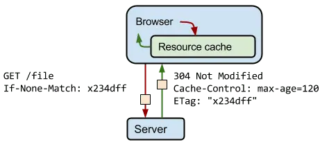

短答
HTTP 缓存让重复请求复用已存储的响应，或用简短的 304 重新验证。
图显示的是 304：客户端询问，服务器说字节没变，正文不再发送。这对“文件一变 URL 就变”的资源有帮助。如果长久缓存把你需要爬虫和买家看见的更新藏起来，它对 HTML 就是错误策略。SEO 健康把 HTML 策略和资源策略分开。
定义
带指纹的样式表可以缓存很久，因为下一版有新的 URL。指向该 URL 的 HTML 应该被重新验证，新指纹才能被发现。因为滑杆这么说就把所有东西缓存“一年”，产品页就会变陈旧。304 图是重新验证的示意，不是任何公司的命中率。
渲染对爬虫意味着什么变化
长时间缓存带指纹的资源，并重新验证 HTML，以便发现新的资源 URL。
含有姓名或购物车的个性化 HTML 不应放进共享缓存。公开的产品文档通常应该可缓存并带重新验证。审计样例是一条 HTML URL 和一个带哈希资源的响应头，而不是把同一个 max-age 贴到两者上。

要检查什么
- 长缓存只用于带指纹的资源
- HTML 被重新验证以便看见新指纹
- 个性化 HTML 不进入共享缓存
- 在一条 HTML URL 和一个资源上抽样响应头
- 没有把同一个 max-age 用到每个响应
一个结构示例
一次部署给 app.js 加了指纹，但 HTML 被缓存一天且不重新验证，于是访客和爬虫一直拿着指向已删除文件的旧 HTML。健康修复是缩短 HTML 缓存或让它重新验证，只把长缓存留在带指纹的文件上。
它不声称什么
缓存响应头不保证排名或引用。
Mika Visibility 把它归到哪里
Mika Visibility 把渲染当作 SEO 健康问题：当模板依赖 JavaScript 时，重要 HTML 能否在有脚本和无脚本两种情况下被获取并比较。这种比较不是 GEO 审计，也不是市场覆盖计划。发现要附在样例 URL 上。模板改完之后的再审计，用来确认修复。
304 图解释重新验证。它不是测得的命中率。
常见问题
304 避免发送什么？
HTTP 缓存让重复请求复用已存储的响应，或用简短的 304 重新验证。
HTML 和带指纹的资源应该如何不同？
长时间缓存带指纹的资源，并重新验证 HTML，以便发现新的资源 URL。
缓存响应头能保证排名吗？
缓存响应头不保证排名或引用。
下一步
做一次结构化的 SEO + GEO 审计，查看健康发现、增长缺口和可以执行的蓝图。
更清晰的实体、答案、证据和上下文，会让页面更容易被理解与引用。任何回答产品中的结果都不作保证。